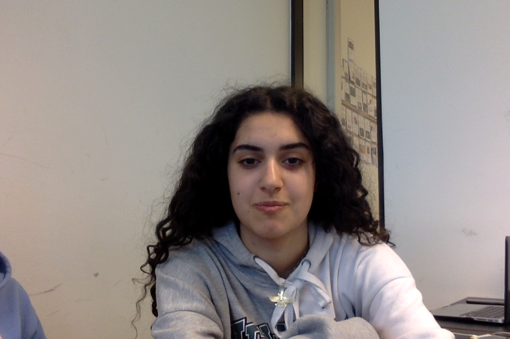

Sima Shadidi

Sima Shadidi er et dyr fra Tøyen. Hun sliter til daglig med alkohol, som desverre ødelegger henne fra innsiden. Hun har derimot et talent for smiske med lærere, noe som er en verdifull egenskap i skolehverdagen. Hun har ingen planer for framtiden, som gjør henne til et uambisiøst individ. Simas mentalitet krasjer i tysktimene. Da synker hun inn i en dyp depresjon som varer timen ut. For å forbedre hverdagen og øke livskvaliteten, bør Sima legge fylla på hylla.
Generell informasjon:
- Alder : 16
- Høyde : 1.60m
- Vekt : Ukjent
- Hårfarge : Svart
- Sivilstatus : Ukjent
- Først observert : 20. August 2018
- Mental styrke : Lav
- Styrker : God synsevne
- Svakheter : "I dont like bellpeppers" (alkohol) (tysk)
- Jobb : Søker jobb
- Naturlig habitat : Tøyen
- Skalering av dyriskhet : 6